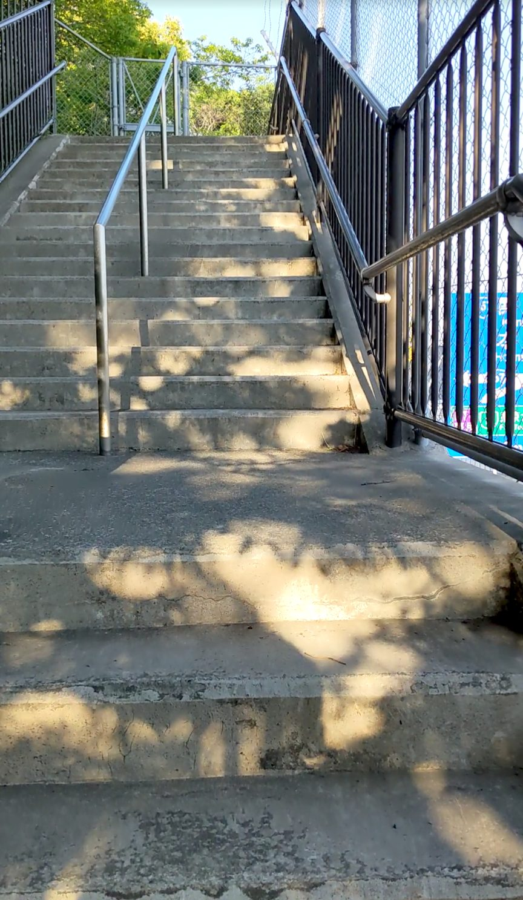
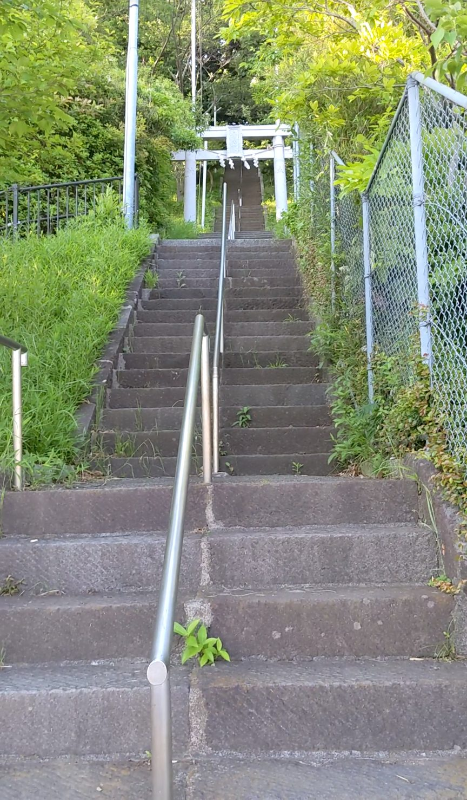
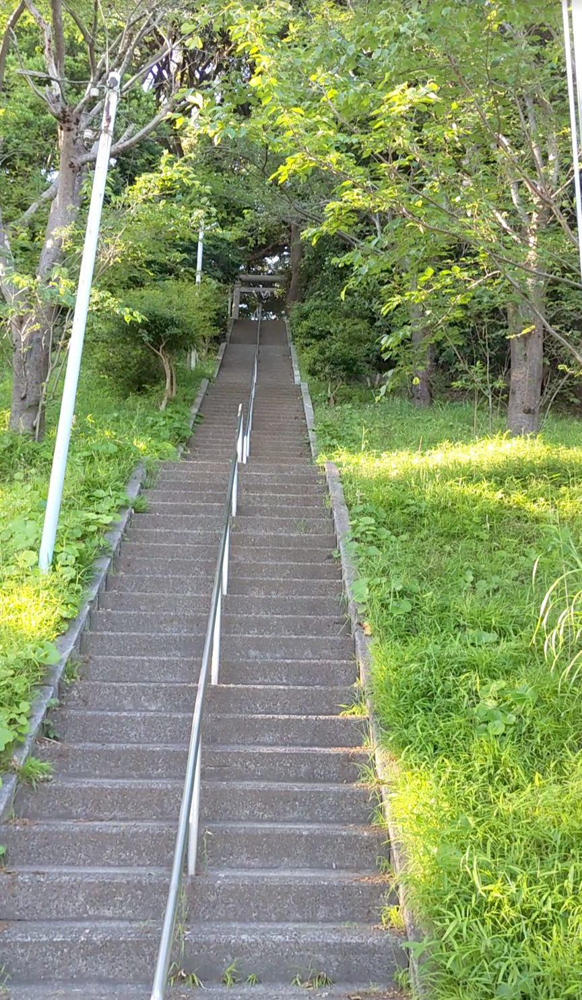
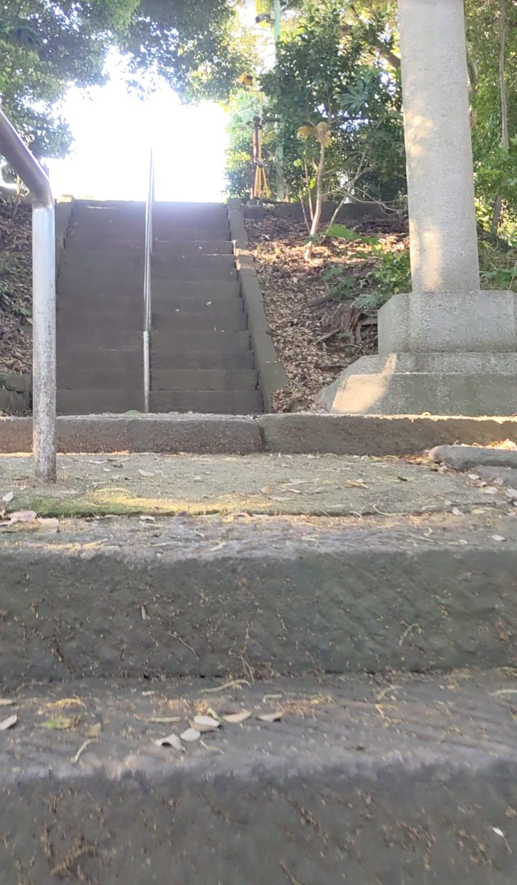
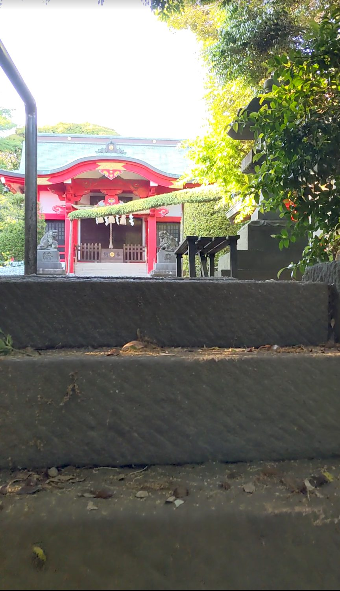
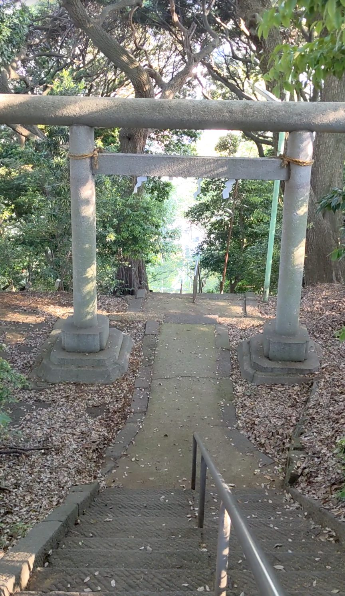

神奈川県横浜市磯子区にある森浅間神社は、244段の長い石段が続く神社です。JR京浜東北線の磯子駅から徒歩約15分。スタート地点は環状線沿いの大通りからかなり奥に入り込んだ場所にあり、やや見つけにくいですが、たどり着いた先に広がる整然とした石段と白い鳥居の景色は一見の価値があります。登るにつれて車の喧騒がすっと消え、鳥の声と風の音だけが聞こえる静けさに変わっていく、そのグラデーションが印象的な石段でした。
JR京浜東北線「磯子駅」下車、徒歩約15分。大通りから住宅街に入り込んだ場所にあるため、階段・石段スポット基本情報の地図を参考に向かうことをおすすめします。
244段と段数が多いため、水分補給を忘れずに。歩きやすいグリップのある靴がおすすめです。夕方は日が傾き足元が暗くなる箇所もあるため、注意して歩きましょう。
磯子駅から住宅街を15分ほど歩いて、石段の入口にたどり着きます。スタート地点のそばは環状線で、車がひっきりなしに行き交うやや騒がしい環境です。でも石段の入口に立つと、白くて形の整った鳥居と、その奥に整然と長く続く階段が目に入ってきます。「整っているな」と率直に感じました。これほどすっきりとした参道の印象を持つ石段はなかなかありません。

少し登って角を曲がると、白くて形の整った鳥居が正面に現れます。そしてその奥に、長くまっすぐ続く石段が一気に視界に広がります。どこまでも続いていくような、清潔感のある美しい景色です。

白い鳥居をくぐると、頂上まで一直線に石段が見通せます。244段の全貌がここで明らかになります。圧倒されますが、一段一段の高さは極端に高いわけではなく、自分のペースで登っていける感じです。

だいぶ登ってきたところで、ふと気づきます。さっきまで聞こえていた車の音がいつの間にか消えています。代わりに聞こえてくるのは、鳥のさえずりと、風に揺れる木々の葉の音。同じ場所にいるはずなのに、まったく別の空間に来てしまったような感覚です。長い石段を登るにつれて、音の世界がゆっくりと入れ替わっていく——この変化がこの石段の一番の魅力だと思います。

244段を登り切ると、赤くて立派な社が出迎えてくれます。頂上には複数のベンチも置かれていて、「よく登ってきたね」と労ってくれているかのようです。息を整えながら腰かけると、ここまで登ってきた達成感がじわりとやってきます。

頂上から石段を見下ろしてみると、下のほうが見えません。244段の長さを改めて実感する眺めです。登っているときより、こうして振り返ったときのほうが「よくこれを登ったな」という気持ちになりました。
